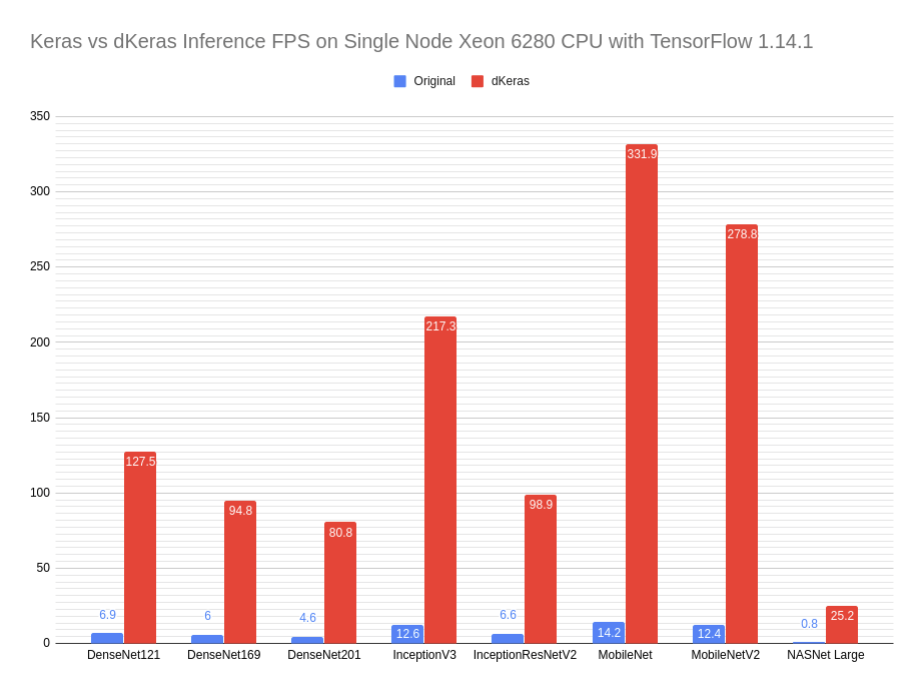

dKeras: Distributed Keras Engine¶
Make Keras faster with only one line of code.¶
dKeras is a distributed Keras engine that is built on top of Ray. By wrapping dKeras around your original Keras model, it allows you to use many distributed deep learning techniques to automatically improve your system’s performance.
With an easy-to-use API and a backend framework that can be deployed from the laptop to the data center, dKeras simpilifies what used to be a complex and time-consuming process into only a few adjustments.
Why Use dKeras?¶
Distributed deep learning can be essential for production systems where you need fast inference but don’t want expensive hardware accelerators or when researchers need to train large models made up of distributable parts.
This becomes a challenge for developers because they’ll need expertise in not only deep learning but also distributed systems. A production team might also need a machine learning optimization engineer to use neural network optimizers in terms of precision changes, layer fusing, or other techniques.
Distributed inference is a simple way to get better inference FPS. The graph below shows how non-optimized, out-of-box models from default frameworks can be quickly sped up through data parallelism:
The dKeras API